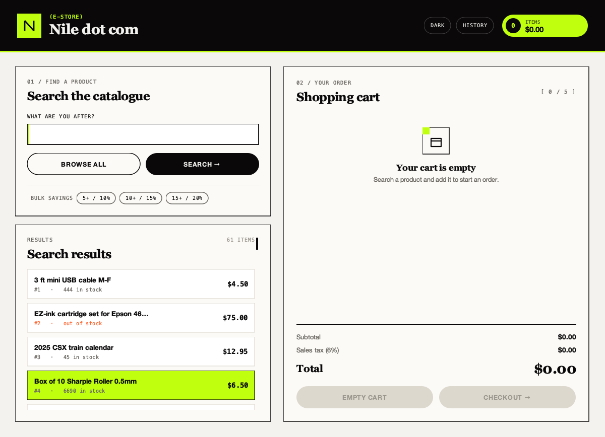
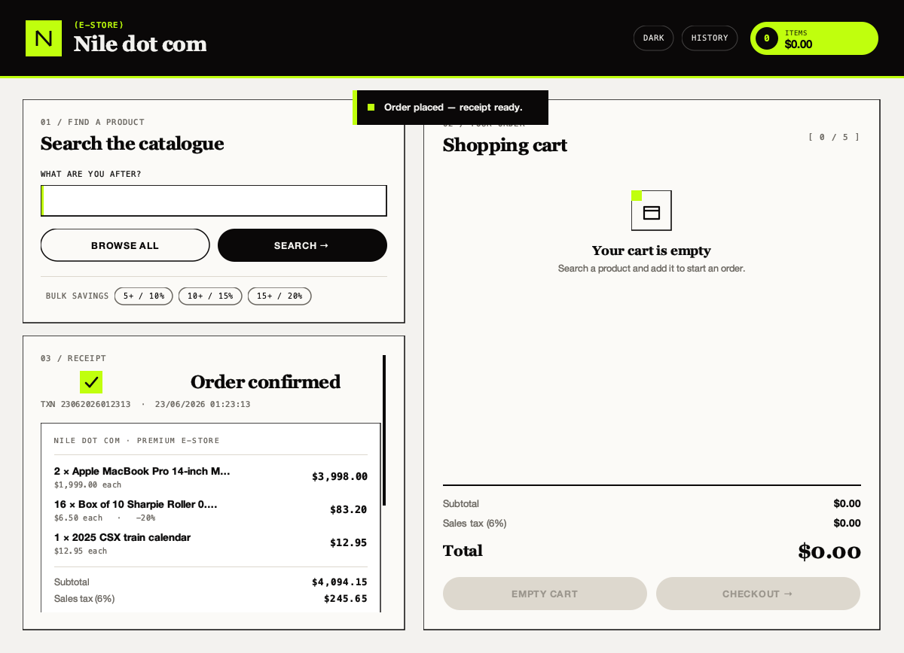
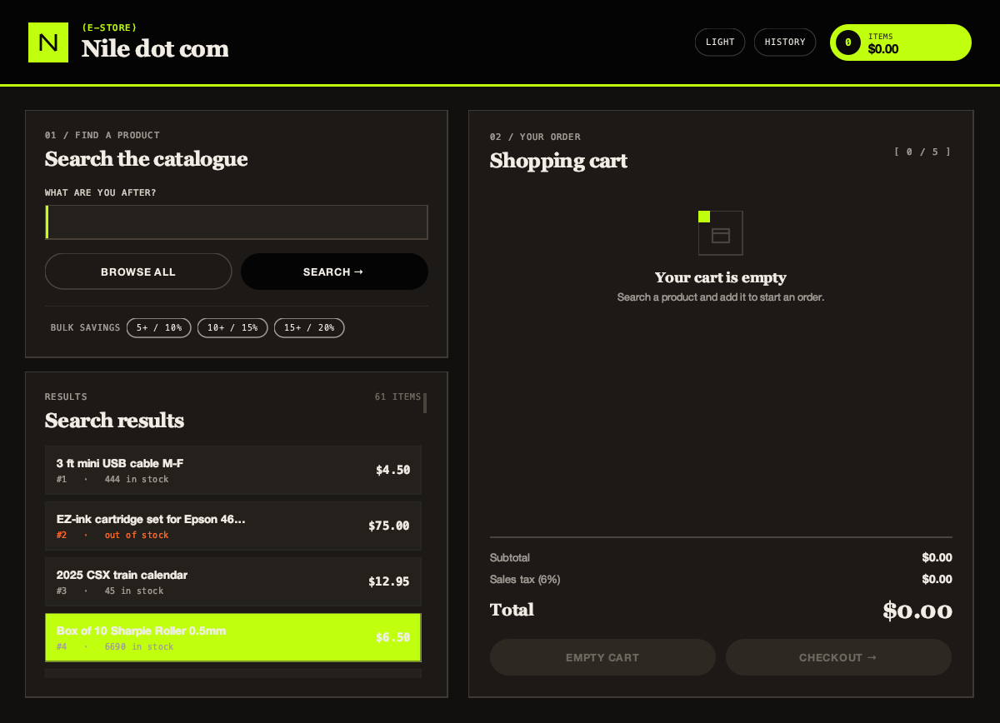

A class assignment,
rebuilt as a real
application.
Nile dot com is a Java Swing storefront — but the point isn't the window. It's the layered, unit-tested architecture underneath: pure domain logic, a repository-backed embedded SQLite store, natural-language catalogue search, and a custom-painted theming UI. Originally one 1,300-line file; now a production-shaped codebase.

Watch it run, end to end
Search, bulk-discount pricing, cart, checkout receipt, and dark mode — the real desktop app, captured frame-for-frame. Loops continuously.
What it does
Search the catalogue in plain language, build a cart with automatic bulk discounts, check out to an itemized receipt, and replay any past order — all backed by business rules that are tested in isolation from the UI.
Checkout renders an inline receipt — no modal.
Placing an order computes 6% sales tax, applies tiered bulk discounts, writes the order to SQLite, and appends to an audit log — then renders a perforated paper receipt in place. Export it as a PNG or send it to a printer.

One toggle flips the entire interface to dark.
Every colour is a semantic design token, so light and dark are two readings of the same system — not a second stylesheet. The acid-lime accent and hard ink borders carry across both.

Natural-language search
Type "cheap usb cable under $10" — a dependency-free parser extracts price bounds, a sort hint, and keyword terms, then filters the catalogue. Fully tested.
Repository over SQLite
Inventory and orders sit behind interfaces backed by embedded SQLite. The CSV catalogue imports as a first-run seed; storage is swappable.
Replayable order history
Every checkout is persisted and reopens from an in-app history view, reconstructed line-by-line from the database.
Tiered bulk pricing
Discounts apply by quantity automatically — 5+ → 10%, 10+ → 15%, 15+ → 20% — computed in the domain layer, not the UI.
Tested + CI
JUnit 5 across domain, search, and persistence, with a JaCoCo coverage gate and GitHub Actions running on every push.
Self-contained jar
A Gradle fat-jar task produces a double-clickable runnable jar — no local Gradle install needed, wrapper committed.
The layering it only claimed to have before
Business logic depends only on interfaces, so the rules are testable in isolation and the storage is swappable. The single-file original mixed all of this into one class.